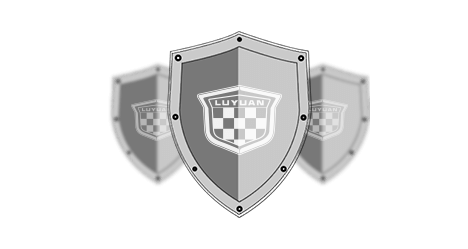
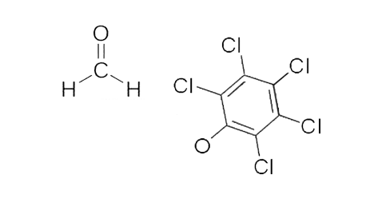
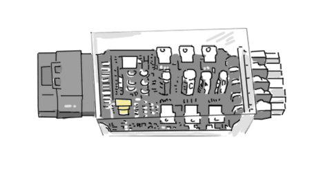
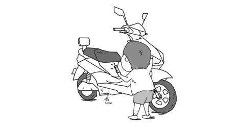

2017年绿源大学招生
全国统一考试
（全国卷）
(满分100分，答题时间：5分钟)
一、单项选择题
1.迄今为止,绿源电动车已有多少年的历史？
大约上下五千年
明明只有100年
靠谱估计20年
不是去年才成立的么
2.以下哪项设计与绿源的安全功能无关？

防触电充电口
防夜路反光胎
德系色彩、纳米油漆
六防充电器
3.绿源采用德系色彩、纳米油漆不是因为以下哪种原因？

光泽度好
色彩纯正
贵
历久弥新
4.以下哪项，绿源智能动力控制器不能做到？

在天空中自由翱翔
实现上坡加力、下坡缓降、平路提速
提供移车助力，在推车时省力90%
一键超车，在关键时刻一骑绝尘
5.以下哪项设计是为了保护熊孩子而存在的？

隐形的翅膀
风火轮
绿源防触电安全母插
斗地主
6.绿源为了电动车安全会进行多项监测以下哪项检测不是真的？
32万次的车架振动测试
18小时的整车全方位淋雨测试
7万次的鞍座疲劳振动试验
20位印度阿三哥同时上车，测验整车强度
96小时的外观塑件抗老化试验
下一题